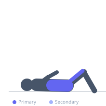

Exercise guide / Decline Sit-Up
Decline Sit-Up
The decline sit-up is performed on a decline bench with the feet secured at the high end, increasing the range of motion and gravitational challenge compared to a flat-surface sit-up. The decline angle lengthens the rectus abdominis at the starting position, providing a greater stretch-to-contraction range that is not achievable on a flat surface. Hip flexors contribute significantly at the lower portion of the movement, while the rectus abdominis dominates during the final degrees of spinal flexion at the top.
Primary muscles
rectus abdominis
iliacus
psoas major
Secondary muscles
internal oblique
external oblique
Stabilizers
rectus femoris
Equipment
Adjustable Bench (Incline / Decline)


Starting position
- Lie on the decline bench with feet secured under the ankle pads, knees bent. Cross arms over the chest or place fingertips behind the ears.
Setup
- Set the bench to a moderate decline (20–40°). Ensure the ankle pads firmly hold the feet without causing ankle discomfort.
Steps
- Step 1: Begin lying fully extended on the bench. Engage the core.
- Step 2: Curl the chin toward the chest, then lift the torso by sequentially contracting the abs and flexing the spine.
- Step 3: Continue rising until the torso is fully upright or slightly past vertical.
- Step 4: Lower slowly back to the starting position with control, allowing the spine to extend fully against the bench.
- Step 5: Avoid jerking the neck or using momentum from the arms.
Coaching cues
- Lead with the chest, not the neck
- Control the way down — don't drop
Breathing
- Exhale on the way up. Inhale on the controlled descent.
Range of motion
- Full extension at the bottom to full upright (or slightly forward) at the top.
Tempo
- 2-1-2-0. Slow and controlled. No bouncing at the bottom.
Common mistakes
- Pulling the neck with the hands behind the head — this compresses the cervical spine
- Using a momentum bounce at the bottom rather than a controlled eccentric
Safety
- Those with lower-back issues should consult a clinician before performing decline sit-ups due to substantial lumbar loading
Training
- hypertrophy: 12–20 reps
- endurance: 20–30 reps
- hypertrophy: 3–4 sets
- Rest: {'hypertrophy': 60}